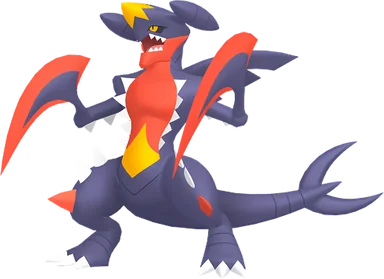
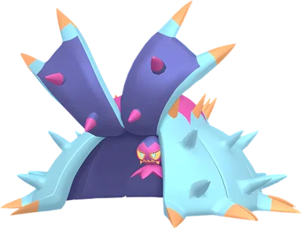
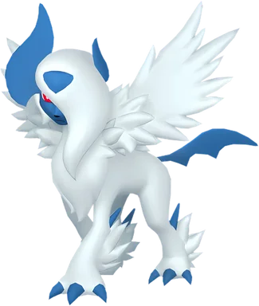

Meta · Track Record
How right have
our ratings been?
Each morning's ratings are saved, then checked against events they never saw. 31 events since Oct 29, 263 top-8 teams.
Show All 31 eventsOfficial only
NASTYPLOT · * * * TRACK RECORD * * *
Top-8 teams by the rating we gave
How often each Pokémon made a top 8, on average
Rated 90+11 of 11 made a top 825%
Rated 70–8929 of 29 made a top 88.7%
Rated 53–6925 of 27 made a top 81.4%
Rated under 5359 of 278 made a top 80.1%
TOTAL230×
Pokémon we rated 90+ made top-8 teams about 230× as often as Pokémon we rated under 53.
FAIR TEST · THE RATINGS NEVER SAW THESE EVENTS
The calls
three we called, three we missed 97
97 Sneasler105 top 8s · won 10
Called it
 94
94MegaCharizard Y92 top 8s · won 15
Called it
 96
96 Kingambit88 top 8s · won 16
Called it

57MegaGarchompwon Sketch Academy Sunday
Missed

59 Toxapexwon Sunday Showdown #4
Missed

50MegaAbsol Zwon Trinity Championship 18
Missed
"Rated" is the average of the ratings saved before each event. Tap a Pokémon for its page.